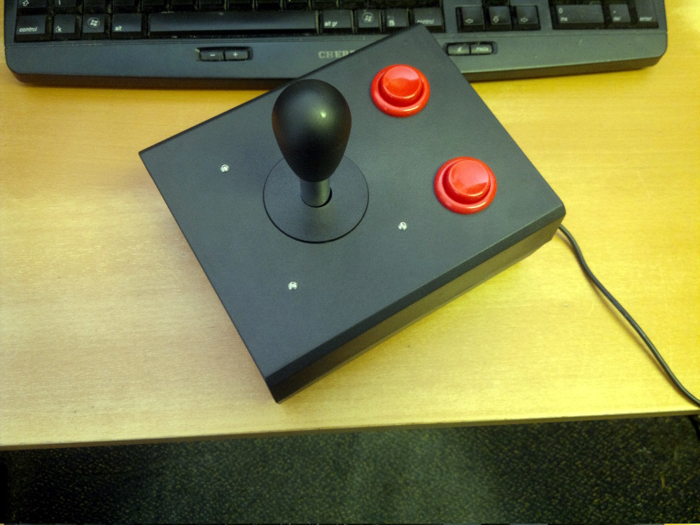
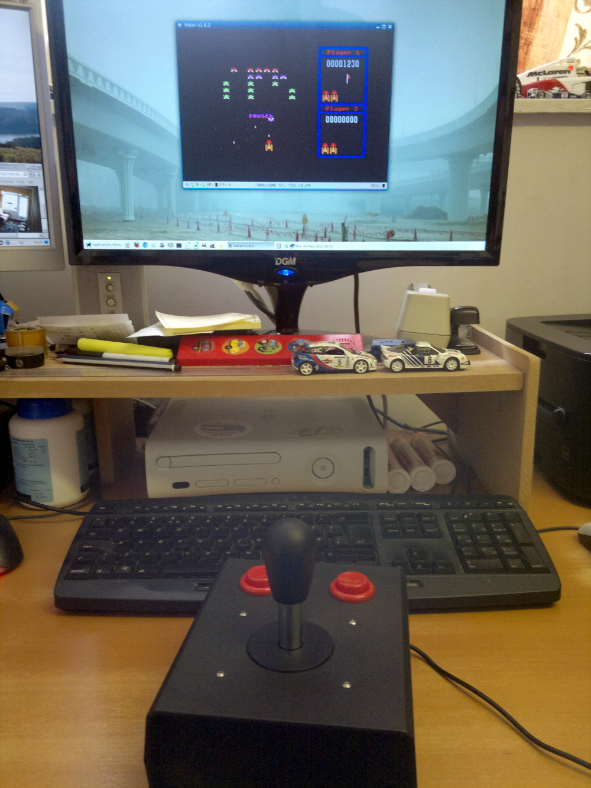

Arduino USB Joystick
I wanted to put together a chunky, arcade style digital joystick to use when playing retro-games (mostly Atari ST vintage) on the PC.
I chose to use an Arduino Leonardo due to the built-in USB Human Interface Device (HID) capabilities. I already had a spare arcade stick from building my own arcade cabinet so I just had to source a couple of arcade buttons and a suitably sized plastic enclosure from Ebay.
I used a 28mm hole saw to mount the buttons and stick in the case which seems to be the standard size for most arcade components.
The Arduino is wired to the buttons and stick as follows:
Button 1 -> Arduino Pin 6
Button 2 -> Arduino Pin 7
Joystick Left -> Arduino Pin 8
Joystick Up -> Arduino Pin 9
Joystick Right -> Arduino Pin 10
Joystick Down -> Arduino Pin 11
These connections can be changed as required if you also update the Arduino sketch accordingly.
Each button and each joystick axis also need to be connected to the Arduino GND pin. The arcade buttons that I have each have 3 connectors so you may need to use a meter to test which two of the connections are closed when the button is pressed.
To use an Arduino Leonardo as a USB game controller requires modified versions of the Arduino libraries, HID.cpp and USBAPI.h which can be found at www.instructables.com. The simple installation requirements are shown on that page. Note that before copying those files into your Arduino directory you should back up the originals. Once you have written the sketch to the Arduino you should restore the original files to avoid problems with future uploads.
My Arduino sketch is available to download from GitHub. See the Arduino Getting Started pages if you are new to Arduino.


Return to home page.